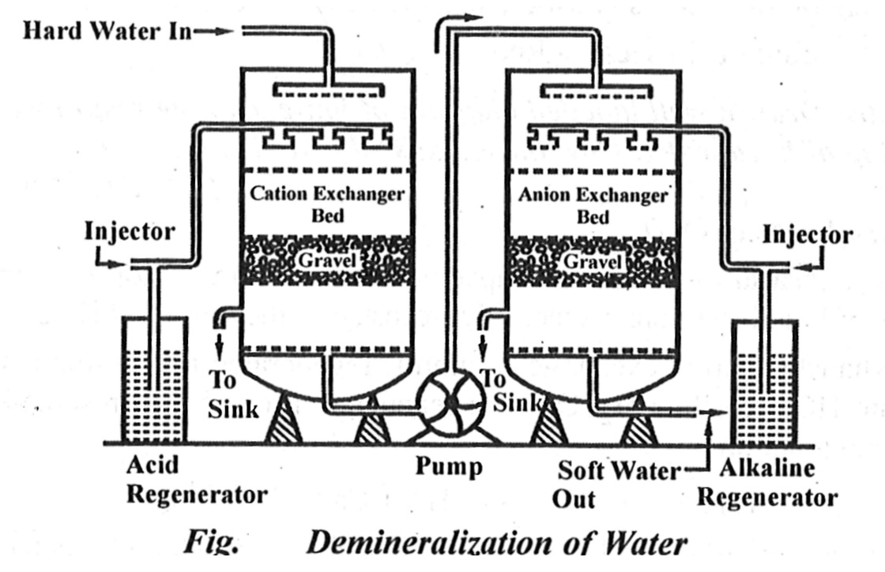

Q.4- Explain Ion-exchange process of water softening.
Ans. Ion-exchange or Deionization or Demineralization Process - Recently ion-exchange resins have been used to remove all minerals from water. It is a process by which ions held on a porous, essentially insoluble solid are exchanged for ions in solution that is brought in contact with it.
Ion-exchange Resin – An ion-exchange resin is a crosslinked organic polymer network having some ionisable group. It may be of two types depending upon the nature of the ionizable group.
(i) Cation Exchange Resin or Cation Exchanger - Such resins have - SO3H, -- COOH or -OH (phenolic) group as the ionizable group. Since these resins exchange the cationic portion of minerals by their hydrogen atom, they are known as cation exchangers.
(ii) Anion Exchange Resin or Anion Exchanger – These resins have -NH2, -NHCH3, -N(CH3)2 or -OH group. They exchange the anionic portion of the minerals and they are known as anion exchanger.
Uses of Ion-exchange Resin – Water treatment by ion-exchange resin includes softening deionization and de-alkalization of water. Therefore, hard water can be converted into soft water by making use of ion-exchange resins.

Process – In this process first we passed hard water through cation exchange column, which removes all the cations (like Ca+2, Mg+2 etc.) from it and equivalent amount of H+ ions are released from this column to water.
Thus,
2RH+ + Ca+2 -> R2Ca+2 + 2H+
2RH+ + Mg+2 -> R2Mg+2 + 2H+
After this process, hard water is passed through anion exchange column, which removes all the anions (like SO4-2, Cl- etc.) from it, and equivalent amount of OH- ions are released from this column to water. Thus,
R'OH-2 +Cl-2 -> R'Cl-+ OH-
2R'OH- + SO2-4 -> R'2 SO2-4 + 2OH-
2R'OH- + CO2-3 -> R'2 CO2-3 + 2OH-
H+ and OH - ions get combined to produce water molecule
H+ + OH- + H2O
The water coming out from the exchanger is free from cations as well as anions. Ion-free water is known as a deionized or demineralized water.